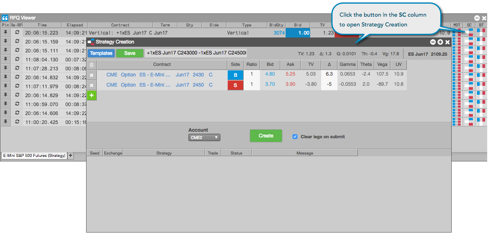

You can seed a Strategy Creation widget with an instrument or strategy displayed in the RFQ Viewer. From there you can modify, add and delete the legs of the strategy to quickly create a new strategy and submit it to the exchange.
For example, if you receive an RFQ for a ES DEC16 Put contract, you can seed the Strategy Creation widget and create a Combo options strategy that includes the ES DEC16 Call options contract and submit an RFQ for this instrument.
